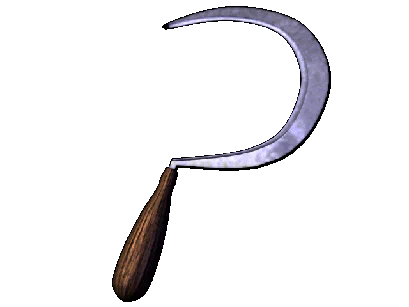

 |
| ... |
Земледелие |
|
| В XII веке земледелие
было основным занятием всего
восточнославянского населения. Состав возделываемых культур был достаточно устойчив: сажали пшеницу и ячмень, просо и кормовые бобы, горох, лен и коноплю. В это время среди зерновых культур на перовое место начинает выходить рожь, однако ее высевают все еще меньше, чем пшеницы, ячменя и проса вместе взятых. Появляется гречиха и овес. Возделываются такие культуры, как репа, капуста, свекла и морковь, лук и укроп. В XII веке повышается культура земледелия и происходит переход к двум основным его системам -- постоянному использование полей и трехполью. В это время развиваются такие упряжные орудия, как соха, рало и плуг (плуг от рала отличается наличием одностороннего отвала). В отличие от рала, которое использовалось только для подрезания верхнего слоя земли, соха была предназначена только для разрыхления почвы и использовалась в основном в лесных зонах. Все древнерусские наконечники пахотных орудий относились к втулчатому типу. В это время появляются и мощные наконечники с плечиками -- их втулка была в два раза шире, чем у предшественников, а лопасть -- шире в полтора раза. Широко используются сошники. Начиная с XII века на юге начинают преобладать мощные симметричные лемехи. Для обработки почвы в это время использовались не только упряжные пахотные орудия, но и ручные орудия труда: лопаты, мотыги, вилы и грабли. Для уборки урожая использовался серп, для сенокошения - коса-горбуша (такая коса сильно различалась с теми, котоые используются в настоящее время). |
Текст и
иллюстрации (c) 1997 Snowball Interactive Entertainment, Inc. |